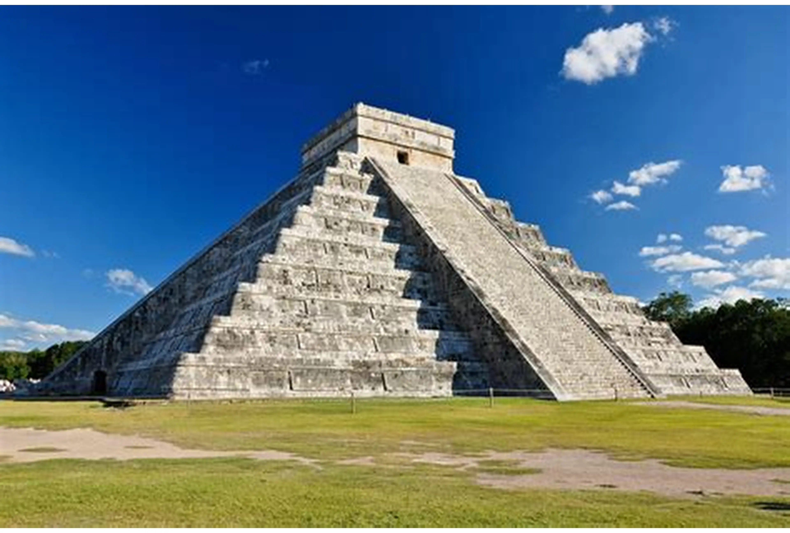
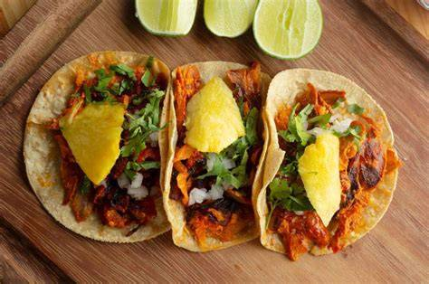
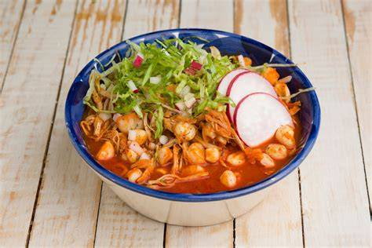
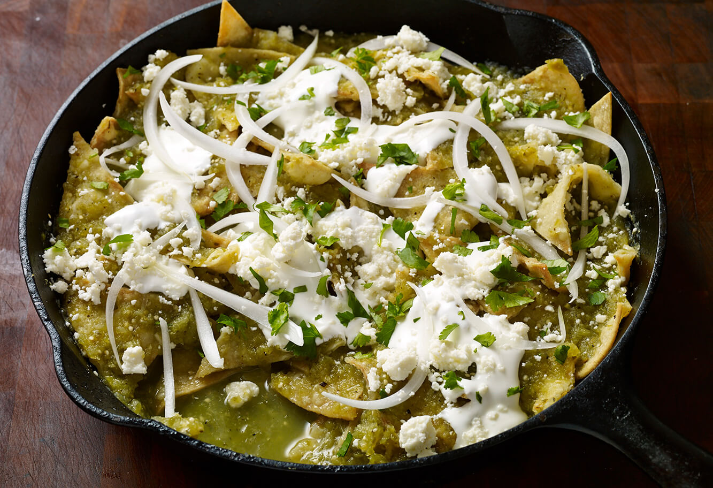

🌎 Lugares turísticos
Cancún
Destino famoso por sus playas de arena blanca y agua turquesa. Es ideal para nadar, hacer snorkel y disfrutar de hoteles y vida nocturna. Es uno de los lugares más visitados de México

Chichén Itzá
Antigua ciudad maya ubicada en Yucatán. Es conocida por la pirámide de Kukulkán y su importancia histórica. Fue una de las civilizaciones más avanzadas de su época
CDMX
Capital del país, llena de cultura, museos y arquitectura. Tiene lugares como el Zócalo, museos y parques importantes. Es una mezcla de historia antigua y vida moderna
🍽️ Comida típica

Tacos
Platillo tradicional hecho con tortillas de maíz o harina, rellenas de diferentes tipos de carne aunque siendo la mas popular el pastor. Se acompañan con salsa, cebolla, cilantro y limón.

Pozole
Sopa mexicana hecha con granos de maíz grande (cacahuazintle), carne de cerdo o pollo y caldo. Se sirve con lechuga, rábano, cebolla, limón y orégano

Chilaquiles
Platillo tradicional mexicano hecho con totopos (tortillas fritas) bañados en salsa verde o roja. Se acompañan con crema, queso, cebolla y a veces pollo o huevo